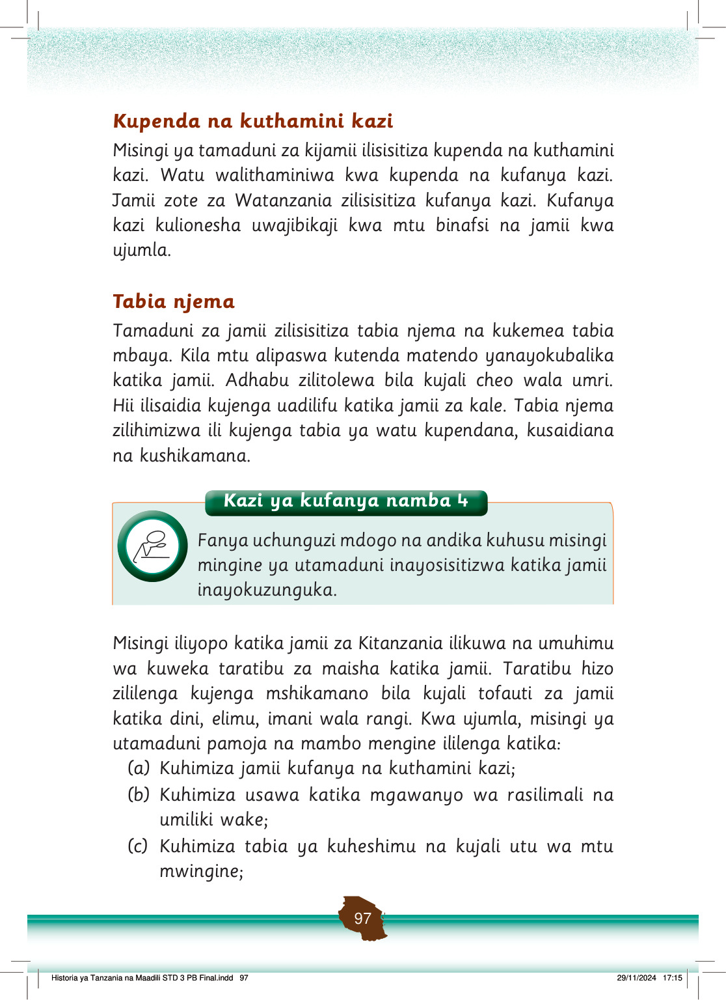

(d) Kuhimiza malezi bora katika jamii;
(e) Kuthamini taaluma na teknolojia za jadi katika kujenga afya, ufanisi katika kazi na utunzaji wa mazingira na rasilimali;
(f) Kulinda na kuimarisha maadili katika jamii;
(g) Kujengea jamii uwezo wa kujiendeleza kimaisha kwa kuzingatia taratibu na kanuni za jamii zao;
(h) Kujenga tabia ya ushirikiano, mshikamano na moyo wa kusaidiana katika jamii; na
(i) Kujenga undugu na upendo katika jamii.
Ni muhimu kwa jamii zetu, kwa sasa, kudumisha asili za jamii za Watanzania katika tamaduni zetu na misingi yake ili kujenga uzalendo.
Tunaweza kukuza maadili kwa sasa kwa kufanya matendo ya maadili yaliyosisitizwa na jamii zetu.
Historia ya Tanzania na Maadili STD 3 PB Final.indd 98
29/11/2024 17:15
Mavazi
Jamii za Kitanzania zilikuwa na mavazi ya asili yenye kutambulisha na kutofautisha jamii moja na nyingine.
Jamii zilikuwa na mavazi ya asili tofauti na mavazi tunayovaa sasa.
Mavazi ya asili hutambulisha na kutofautisha jamii
Kazi ya kufanya namba 5
Kazi ya kufanya namba 5: Andika wajibu wako na wa jamii kwa sasa katika kudumisha utamaduni.
Andika wajibu wako na wa jamii kwa sasa katika kudumisha utamaduni
Kazi ya kufanya namba 6
Kazi ya kufanya namba 6: Waulize wazazi au walezi kuhusu aina, muundo na mwonekano wa mavazi ya kabila lako na tofauti ya mavazi ya asili na ya sasa.
Waulize wazazi au walezi kuhusu aina, muundo na mwonekano wa mavazi ya kabila lako na tofauti ya mavazi ya asili na ya sasa.